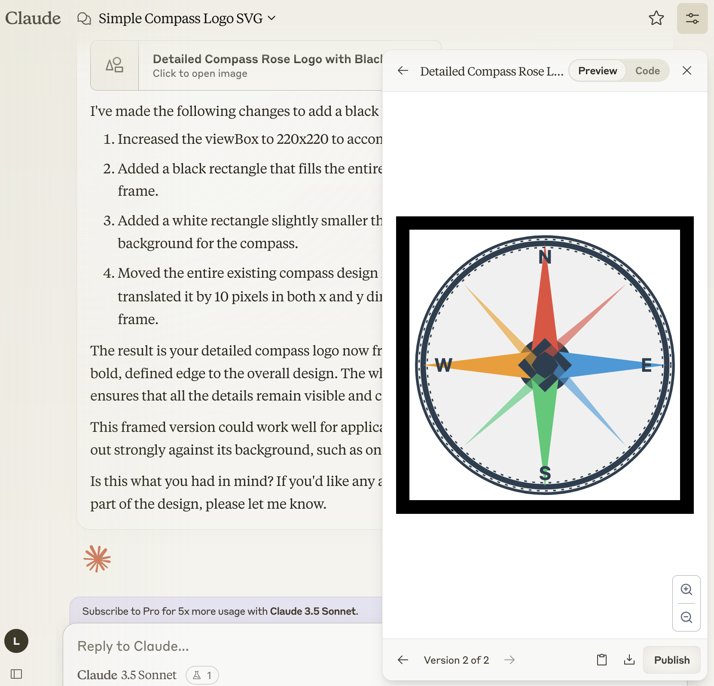
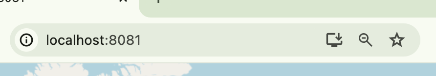

LZ
Table of Contents
Making a geo PWA with CLJS and Openlayers
Motivation
We want to make a quick and easy map based app. ClojureScript is the natural choice for me. Maybe this would be a good application for Squint though, I haven't tried that yet. Another article perhaps.
Openlayers is a javascript maps library. There are others, but OL has the benefits of being free, no signups, and pretty comprehensive. Maybe Leaflet is a little friendlier. Here we are using OL.
The choice of Progressive Web App is motivated by not wanting to have to write platform specific code to get something that will run in the browser and also feel like a native app on ios and android. We could build a cross-platform mobile app with ClojureDart or React Native, but PWA seems to be by far the simplest way to me. The trade-offs of PWAs are widely discussed so we won't cover that here.
Shadow-cljs setup
The first part of this setup is based on the shadow-cljs docs. If you encounter problems along the way then refer back to the shadow-cljs quickstart guide.
Use npx to create a new shadow-cljs project.
npx create-cljs-project my-map-app
This gives us a project template. Now, add an entrypoint function in a new namespace under src/main.
(ns my-map-app.frontend.app) (defn init [] (js/alert "hi mappers"))
Now create a build in the shadow-cljs.edn that points to our new app.
{:source-paths ["src/dev" "src/main" "src/test"] :dependencies [] :builds {:frontend {:target :browser :modules {:main {:init-fn my-map-app.frontend.app/init}}}}}
We need to create a public/index.html . Shadow will output to public/js/main.js by default.
<!doctype html> <html> <head> <meta charset="utf-8" /> </head> <body> <div id="map"></div> <script src="/js/main.js"></script> </body> </html>
Let's use shadow-cljs's built-in dev server:
{... :dev-http {8081 "public"} :builds {:frontend ...}}
Now spin up the shadow-cljs development process
npx shadow-cljs watch frontend
This should trigger a build. We should have a connected app at localhost:8081 - make a change to my-map-app.frontend.app/init to check that hot-reloading is working.
Adding Openlayers
Interrupt the shadow-cljs watch process in the terminal with Ctrl-C, and then install Openlayers with npm:
npm install ol
Have a look in node_modules to see that ol has in fact been added. Then rerun the shadow-cljs watch command.
We'll add a new function that builds the OL map. It targets the map div that we added to the index.html. Note how we use $default to get the default export of the OL namespaces.
Openlayers is oriented around layers, as the name suggests. Those layers could be tiles or vectors or all sorts of other things. Have a look into the Openlayers Examples for some inspiration.
Here we have a very minimal setup: just one tile layer with a basemap from OpenStreetMap. We also set the initial view.
(ns my-map-app.frontend.app (:require ["ol/layer/Tile$default" :as Tile] ["ol/Map$default" :as Map] ["ol/source/OSM$default" :as OSM] ["ol/View$default" :as View])) (defn ol-map [] (Map. (clj->js {:layers [(Tile. (clj->js {:source (OSM.)}))] :target "map" :view (View. (clj->js {:center [0 0] :zoom 2}))}))) (defn ^:dev/after-load init [] (ol-map))
Notice some metadata has been added to the init function to cause it to be rerun after the namespace gets loaded in a REPL. Include that if it's helpful for your workflow.
If all is well then you should be getting a warning now in the browser console that says that the map container width or hight is 0. Let's create a styles.css to handle this. Inside the public directory:
body { margin: 0px; /* to make map flush with the window edge */ } #map { width: 100vw; height: 100vh; }
Link to this in the index.html:
<html> <head> <meta charset="utf-8" /> <link rel="stylesheet" href="styles.css"> </head> ... </html>
Now you should have an app with an interactive map. Clearly the buttons and attribution are a bit skew-wiffy. Style to your heart's content.

Turning it into a PWA
We want to allow the user to install this in their device such that it seems like any other app. To get this capability we need to turn it into a progressive web app. While essentially just a web app, a PWA typically has a few extra ingredients:
- a
manifest.json- This tells the browser how to handle the PWA - some icons - So that, among other things, there can be a nice button on the device to launch the app.
- a service worker - This does the work of caching certain resources, allowing for offline usage. A service worker is actually optional so we'll skip it in this guide, but look into it.
Icons
Let's start with the icons. Here's a lazy method: get an LLM to generate a vector image so it's nice and clean (at time of writing Claude is nice for this because it will write the SVG in code and then render a preview). Screenshot that at a reasonable resolution (tip: tell Claude to draw the logo such that it is inside a square with a black outline. That way you can select an almost exact square easily)

I actually like the black border here so I will screenshot around the outside.
Take that screenshot and load it into the PWA Builder icon generator this will spit out an archive of icons of various sizes for various platforms. It's probably more than we need but fine let's go with it.
There should be three directories of icons for different platforms and an icons.json file. Put all of that into your public directory and rename the icons.json to manifest.json
Manifest
We already have the icons in our manifest. We need to add a few other things.
{
"name": "My Map App",
"short_name": "mymap",
"start_url": "/",
"display": "standalone",
"id": "mymapappuniqueidbananas",
"icons": [...],
}
Point to the manifest.json in our index.html by adding a link to the <head>:
<!doctype html> <html> <head> <link rel="manifest" href="manifest.json"> <meta charset="utf-8" /> <link rel="stylesheet" href="styles.css"> </head> <body> <div id="map"></div> <script src="/js/main.js"></script> </body> </html>
Now we should have a functioning PWA. If you are using Chrome for example you should see a little download button in the address bar:

Give it a go. Congratulations you are an app developer. Consult the web for how to install on android, ios, etc, how to upload things to app stores and so on.